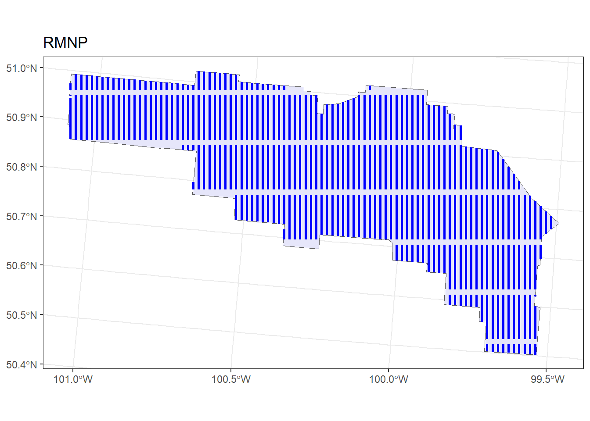
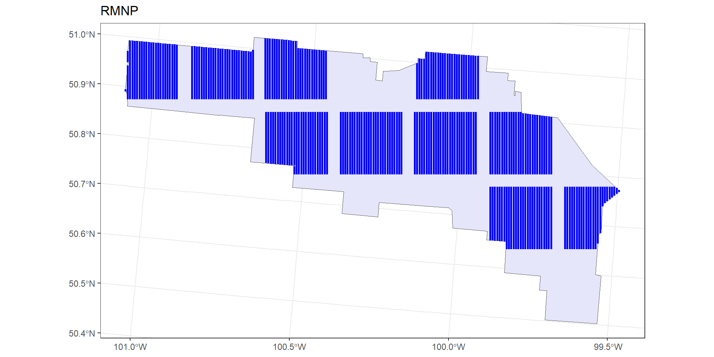
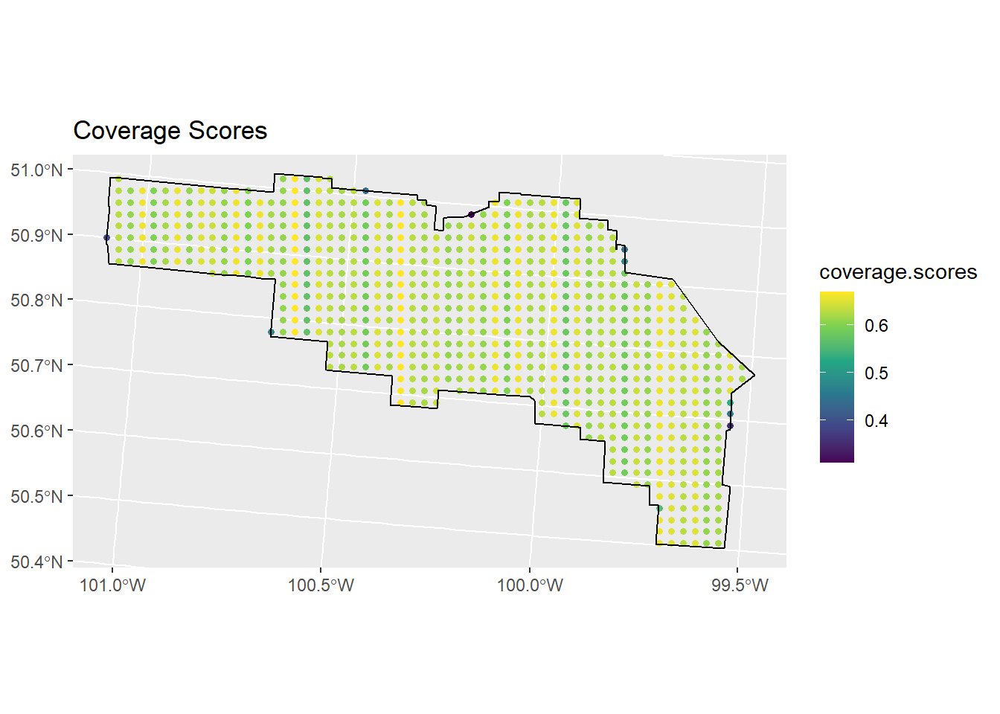

library(here)
library(dsims)
library(sf)
library(dplyr)
library(ggplot2)Survey designs with subplots
Introduction
A crewed aircraft can fly transects across a whole study area in one or a few long flights. A drone is limited by its endurance and by how far it may fly from its operators. One practical design is therefore to divide the effort into subplots: compact blocks, each small enough to survey in one flight, with transects placed inside them. The Alberta simulation study compared such designs for fixed-wing drones and quadcopters with the conventional segmented grid design, matching the total length of transect flown (Multi-platform simulations).
The dsims examples cover designs across whole regions and designs with strata that divide a region completely (Grouped strata). This article shows how to generate subplots automatically, turn them into a region with one stratum per subplot, place systematic and zigzag transects inside them, and restrict the simulated population to the subplots. We compare them with two designs across the whole park: the conventional segmented grid of 10 km transects, which the following articles use as their default, and systematic lines with the same effort as the 2025 survey.
Prerequisites
Generating transects and coverage grids is much faster with the fork of dssd (see Packages); the results are the same with the CRAN version.
We load the region, density grid and population from From density surface model to simulation.
setup <- readRDS(here("workflow", "outputs", "simulation_setup.rds"))
list2env(setup, envir = environment())<environment: R_GlobalEnv>Coverage grid
To compare designs we need to know how evenly each one covers the study area. run.coverage() generates many sets of transects and records, for each point of a coverage grid, the proportion of sets in which it fell inside the searched strip. A 2 km grid is fine enough for this.
cover <- make.coverage(region, spacing = 2000)A segmented grid design
The standard design for aerial ungulate surveys in Alberta is a sample of 10 km transects, preferably oriented north–south, that deals appropriately with edge effects (Alberta Environment and Parks 2016). The protocol describes a simple random sample of transects, and a systematic layout for small or geometrically complex study areas. dssd provides the systematic version as a segmented grid: 10 km segments on north–south lines 1.2 km apart, with a random start. seg.threshold = 10 discards segments that are less than 10% (1 km) inside the park, and edge.protocol = "minus" handles the edge.
design_seg <- make.design(
region = region, transect.type = "line", design = "segmentedgrid",
spacing = 1200, seg.length = 10000, seg.threshold = 10, design.angle = 0,
edge.protocol = "minus", truncation = TRUNCATION_M, coverage.grid = cover
)
transects_seg <- generate.transects(design_seg)plot(region, transects_seg)
This is the default design in the following articles. Its effort is set by the spacing and segment length rather than matched to the 2025 survey, so it flies less transect than the design below.
A design across the whole park
The 2025 survey flew 3756 km on effort over the park. As a baseline, we use systematic north–south lines across the whole park with the spacing that gives the same effort: the park area divided by the line length.
spacing_full <- round(region@area / effort, -1)
spacing_full[1] 830design_full <- make.design(
region = region, transect.type = "line", design = "systematic",
spacing = spacing_full, design.angle = 0, edge.protocol = "minus",
truncation = TRUNCATION_M, coverage.grid = cover
)
transects_full <- generate.transects(design_full)plot(region, transects_full)Designing subplots
Number and size of subplots
Each subplot is one flight. The Superwake SW-117 flies about 367 km in a 6-hour flight at 17 m/s, so the number of subplots is the total effort divided by one flight’s length. Within a subplot the lines are spaced twice the truncation distance apart, so the searched strips of neighbouring lines meet without gaps or overlap.
FLIGHT_LENGTH_M <- 17 * 6 * 3600 # 367.2 km per flight
n_plots <- round(effort / FLIGHT_LENGTH_M)
spacing_sub <- 2 * TRUNCATION_M
c(n_plots = n_plots, spacing = spacing_sub) n_plots spacing
10.0000 522.3025 find_best_block_dim() finds the subplot shape closest to a square that fits a whole number of lines at this spacing within each subplot’s share of the effort.
find_best_block_dim <- function(total_length, number_blocks, spacing) {
block_length <- total_length / number_blocks
possible_lines <- seq(1, block_length / spacing, 1)
tibble(
nr_lines = possible_lines,
y_length = block_length / possible_lines,
x_length = spacing * possible_lines,
difference = abs(block_length / possible_lines - spacing * possible_lines)
) |>
filter(total_length >= y_length * nr_lines * number_blocks) |>
arrange(difference) |>
slice(1)
}
plot_dim <- find_best_block_dim(effort, n_plots, spacing_sub)
plot_dim# A tibble: 1 × 4
nr_lines y_length x_length difference
<dbl> <dbl> <dbl> <dbl>
1 27 13911. 14102. 191.Placing the subplots
To spread the subplots evenly, we use make.coverage() in a different role: asked for a given number of grid points, it places them evenly over a region. We place the centres in the park shrunk by 1 km, so no subplot is centred right at the boundary.
inner <- make.region(region.name = "inner", shape = st_buffer(region@region, -1000), units = "m")
centres <- make.coverage(inner, n.grid.points = n_plots)@grid
nrow(centres)[1] 11make.coverage() can return one or two more points than requested. We build a rectangle around each centre, clip it to the park, and keep the n_plots largest.
make_subplots <- function(centres, width, height) {
xy <- st_coordinates(centres)
polys <- lapply(seq_len(nrow(xy)), function(i) {
st_polygon(list(cbind(
xy[i, 1] + c(-1, 1, 1, -1, -1) * width / 2,
xy[i, 2] + c(-1, -1, 1, 1, -1) * height / 2
)))
})
st_sf(geometry = st_sfc(polys, crs = st_crs(centres)))
}
plots <- make_subplots(centres, plot_dim$x_length, plot_dim$y_length) |>
st_intersection(st_geometry(region@region))
plots <- plots[order(st_area(plots), decreasing = TRUE)[seq_len(n_plots)], ]
plots$ID <- sprintf("plot%02d", seq_len(nrow(plots)))Subplots as a region
In dsims, each subplot becomes a stratum of a new region. Transects are then generated separately within each stratum.
sub_region <- make.region(region.name = "subplots", shape = plots,
strata.name = plots$ID, units = "m")
sum(sub_region@area) / region@area[1] 0.5440847The subplots cover about 54% of the park.
Transects within subplots
We compare two designs within the subplots. Systematic parallel lines fill each subplot as planned. An equal-spaced zigzag (eszigzag) reduces the flying time between lines, because the aircraft does not have to turn back at the end of each line. We give the zigzag the same line length per subplot as the systematic design, taken from one set of systematic transects.
design_sys <- make.design(
region = sub_region, transect.type = "line", design = "systematic",
spacing = spacing_sub, design.angle = 0, edge.protocol = "minus",
truncation = TRUNCATION_M, coverage.grid = cover
)
transects_sys <- generate.transects(design_sys)
design_zz <- make.design(
region = sub_region, transect.type = "line", design = "eszigzag",
line.length = transects_sys@line.length, design.angle = 0, edge.protocol = "minus",
truncation = TRUNCATION_M, coverage.grid = cover
)
transects_zz <- generate.transects(design_zz)par(mfrow = c(1, 2))
plot(region, transects_sys)
plot(region, transects_zz)
Coverage and effort
run.coverage() repeats the transect generation and summarises coverage, line length and total flight distance across repetitions. We use 100 repetitions per design, run in parallel (run.parallel is available in the dssd fork).
set.seed(2025)
design_full <- run.coverage(design_full, reps = 100, run.parallel = TRUE)
design_sys <- run.coverage(design_sys, reps = 100, run.parallel = TRUE)
design_zz <- run.coverage(design_zz, reps = 100, run.parallel = TRUE)
design_seg <- run.coverage(design_seg, reps = 100, run.parallel = TRUE)The design statistics distinguish three distances: line.length is the length of transect on effort; trackline adds the travel between transects; and cyclictrackline adds the return from the last transect to the start. Coverage (p.cov.area) is the percentage of the region inside the searched strips.
design_metrics <- function(design, name) {
s <- design@design.statistics
data.frame(
design = name,
on_effort_km = s$line.length["Mean", "Total"] / 1000,
trackline_km = s$trackline["Mean", "Total"] / 1000,
cyclic_km = s$cyclictrackline["Mean", "Total"] / 1000,
on_effort_pct = 100 * s$line.length["Mean", "Total"] / s$cyclictrackline["Mean", "Total"],
covered_pct = s$p.cov.area["Mean", "Total"]
)
}
metrics <- rbind(
design_metrics(design_full, "whole park, systematic"),
design_metrics(design_sys, "subplots, systematic"),
design_metrics(design_zz, "subplots, zigzag"),
design_metrics(design_seg, "segmented grid")
)
metrics$covered_pct[2:3] <- metrics$covered_pct[2:3] * sum(sub_region@area) / region@area
knitr::kable(metrics, digits = 1)| design | on_effort_km | trackline_km | cyclic_km | on_effort_pct | covered_pct |
|---|---|---|---|---|---|
| whole park, systematic | 3758.7 | 3951.7 | 4063.2 | 92.5 | 62.7 |
| subplots, systematic | 3248.8 | 3399.1 | 3538.1 | 91.8 | 53.8 |
| subplots, zigzag | 3250.2 | 3281.2 | 3424.5 | 94.9 | 53.8 |
| segmented grid | 2313.6 | 2735.5 | 2845.5 | 81.3 | 38.6 |
Coverage for the subplot designs is given as a percentage of the park rather than of the subplots, so all rows are comparable. Four points stand out:
- Less effort than planned. The subplot designs fly about 14% less transect than planned, because the park boundary clips some subplots. This was a common difficulty in the Alberta study as well: fixed-size subplots rarely fit an irregular study area exactly.
- Less of the park covered. With less effort and all of it inside the subplots, the subplot designs cover 54% of the park, against 63% for the whole-park design.
- More flying on effort with the zigzag. The zigzag spends a larger share of the flight on effort than systematic lines in the same subplots (95% against 92%), because it avoids the turns between parallel lines.
- The segmented grid. The segmented grid flies 2314 km on effort and covers 39% of the park. Because its segments are short, 19% of its flight is spent travelling between them.
plot(design_full)
Restricting the population to the subplots
dsims estimates density for the region it is given. A design confined to subplots cannot provide an estimate for the whole park, so the population in the simulation must also be confined to the subplots: the estimates are then compared with the true density inside the subplots. We therefore cut the moose density grid to the subplots, label each piece with its subplot as the stratum, and set the number of groups in each stratum to its expected abundance under the DSM divided by the mean group size.
density_moose <- densities$Moose
cells_sub <- st_intersection(density_moose@density.surface[[1]], plots) |>
mutate(strata = ID) |>
select(strata, density, x, y)Warning: attribute variables are assumed to be spatially constant throughout
all geometriesdensity_sub <- density_moose
density_sub@density.surface <- list(cells_sub)
density_sub@region.name <- sub_region@region.name
density_sub@strata.name <- sub_region@strata.name
N_sub <- tapply(cells_sub$density * as.numeric(st_area(cells_sub)), cells_sub$strata, sum)
N_sub <- round(N_sub[sub_region@strata.name] / group_size[["Moose"]])
N_subplot01 plot02 plot03 plot04 plot05 plot06 plot07 plot08 plot09 plot10
19 20 15 20 20 19 14 16 9 13 N_sub is ordered to match the strata of the region, because make.population.description() matches the population sizes to the strata by position.
pop_desc_sub <- make.population.description(
region = sub_region, density = density_sub,
covariates = list(size = list(distribution = "ztruncpois", mean = group_size[["Moose"]])),
N = as.numeric(N_sub), fixed.N = TRUE
)Simulating the designs
Now we can run each design many times and see how well it estimates moose density. For this comparison, detectability is constant: the moose detection function at the median canopy cover (see From density surface model to simulation). The next article makes detectability depend on canopy.
Each simulated survey is analysed with a hazard-rate detection function without covariates. For the subplot designs, the subplots are strata of the design but are analysed together, like the grouped strata in the dsims article Grouped strata. group.strata maps every subplot to a single analysis stratum.
analysis <- make.ds.analysis(dfmodel = ~1, key = "hr", truncation = TRUNCATION_M)
analysis_sub <- make.ds.analysis(
dfmodel = ~1, key = "hr", truncation = TRUNCATION_M,
group.strata = data.frame(design.id = sub_region@strata.name, analysis.id = "subplots")
)Each of the 100 repetitions generates a new population, a new set of transects and new detections, and fits the detection function. The simulations run in parallel and take a few minutes each; for your own designs, start with 20 repetitions to check the setup.
REPS <- 100
set.seed(2025)
run <- function(design, pop, analysis) {
sim <- make.simulation(reps = REPS, design = design, population.description = pop,
detectability = detect_constant, ds.analysis = analysis)
run.simulation(sim, run.parallel = TRUE)
}
sims <- list(
"segmented grid" = run(design_seg, pop_descs$Moose, analysis),
"whole park, systematic" = run(design_full, pop_descs$Moose, analysis),
"subplots, systematic" = run(design_sys, pop_desc_sub, analysis_sub),
"subplots, zigzag" = run(design_zz, pop_desc_sub, analysis_sub)
)We compare the designs on density, because the subplot designs estimate density within the subplots, not across the whole park. For each design we extract the true and mean estimated density of individuals (animals per km²), the bias, the root mean squared error relative to the true density (RRMSE), the proportion of 95% confidence intervals that contain the true density, and the mean coefficient of variation.
sim_metrics <- function(sim) {
D <- summary(sim, description.summary = FALSE)@individuals$D
D <- D[nrow(D), ] # the total, or the single analysis stratum
data.frame(true_D = D$Truth * 1e6, mean_D = D$mean.Estimate * 1e6,
bias_pct = D$percent.bias, rrmse = D$RMSE / D$Truth,
ci_coverage = D$CI.coverage.prob, mean_cv = D$mean.se / D$mean.Estimate)
}
design_results <- cbind(design = names(sims), do.call(rbind, lapply(sims, sim_metrics)))
rownames(design_results) <- NULL
knitr::kable(design_results, digits = 3)| design | true_D | mean_D | bias_pct | rrmse | ci_coverage | mean_cv |
|---|---|---|---|---|---|---|
| segmented grid | 0.147 | 0.153 | 4.259 | 0.176 | 0.95 | 0.157 |
| whole park, systematic | 0.147 | 0.149 | 1.533 | 0.100 | 0.96 | 0.124 |
| subplots, systematic | 0.148 | 0.153 | 3.739 | 0.138 | 0.96 | 0.140 |
| subplots, zigzag | 0.148 | 0.152 | 2.618 | 0.133 | 0.96 | 0.131 |
With 100 repetitions, the Monte Carlo standard error of the bias is about one percentage point, so only larger differences are meaningful. The bias ranges from 1.5% to 4.3% and the RRMSE from 0.1 to 0.18. The subplot designs estimate density within the subplots about as well as the whole-park designs estimate it for the park.
Two caveats apply:
- The estimate is for the subplots, not the park. To estimate abundance for the whole park from subplots, the survey data have to be modelled with a DSM, predicting from habitat covariates as in Fitting a density surface model.
- The subplots here happen to be representative. Their true density is close to the park’s. Subplots placed in unrepresentative habitat would estimate a different density.
Saving
saveRDS(
list(design_seg = design_seg, design_full = design_full, design_sys = design_sys, design_zz = design_zz,
sub_region = sub_region, pop_desc_sub = pop_desc_sub, plots = plots,
metrics = metrics, design_results = design_results),
here("workflow", "outputs", "simulation_designs.rds")
)References
Alberta Environment and Parks. 2016. Aerial Ungulate Surveys Using Distance Sampling Techniques: Protocol Manual. Environmental Monitoring; Science Division, Government of Alberta. https://open.alberta.ca/dataset/71c53d7b-0802-4800-9f95-0520b64b63c2/resource/ee933caa-bfc7-4334-a4d0-6085ebf198e7/download/aep-aerial-ungulate-surveys-using-distance-sampling-2016.pdf.